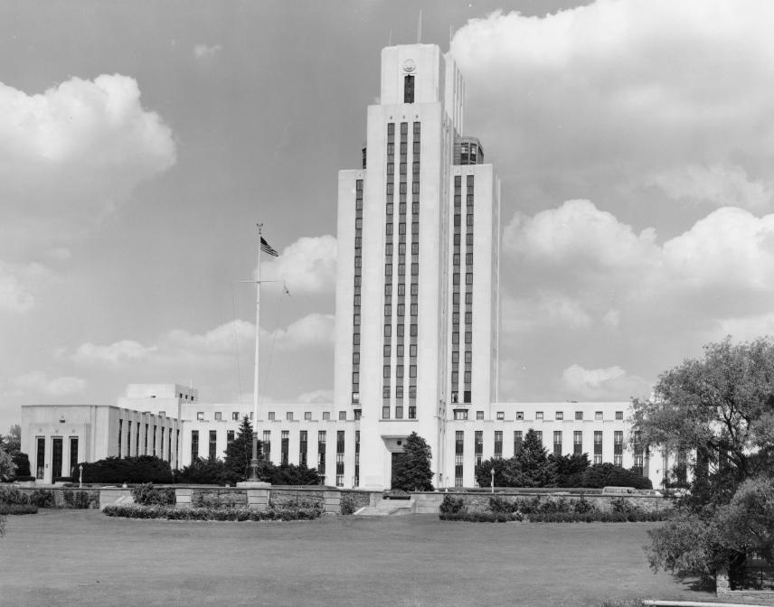

Forrestal naît à Beacon (comté de Dutchess, New York), le , d'un
père émigrant et d'une mère américaine d'origine irlandaise. Il cherchera durant toute sa jeunesse à échapper à ses
origines. Il intègre l'université de Princeton, où il devient
une figure proéminente du campus mais, pour des raisons inconnues, le quitte au Printemps de son année sénior et loupe
son diplôme.
Finance
En dépit de ce revers, il travaille pour la firme d'investissement de Wall Street de William A. Read et Companie
(plus tard connue sous le nom de Dillon Read Company). Faisant rarement mention de son passé, ne visitant
que très peu sa famille, il entame une carrière étonnante dans le monde de la finance. C'est un drogué du travail,
avec le désir impétueux de rejoindre les rangs des plus riches. Quelques années après son arrivée à Wall Street, il
a une fortune confortable avec le marché en hausse des années 1920s et
fréquente des cercles sociaux huppés. En , il épouse Josephine Ogden, une journaliste de Vogue
Magazine ayant été choriste dans les Zigfield Follies. Même à un tel point de succès, on pouvait
deviner la tragédie venir. Son mariage devient en fait une union difficile, parfois déchirante, avec une femme
profondément instable. On écrira qu'il est instinctivement résistant au fait de se livrer sincèrement, et
incapable de s'engager profondément avec d'autres personnes, y compris celles qu'il a, à l'évidence, aimées. Les
conséquences de cette faille sont une vie personnelle rayée et, finalement, un effondrement mental.
Gouvernement
Après une vingtaine d'années à Wall Street, il entre au Gouvernement Fédéral . Il est tout
d'abord Assistant Spécial du président Franklin Delano Roosevelt et chargé d'aider
l'effort de mobilisation militaire. Il s'épanouit pendant la guerre à Washington (D.C.). Son génie de l'organisation
et son appetit pour le travail 7 jours/7 font de lui une personne capable d'influencer l'administration Roosevelt.
Lorsque le Secrétaire de la Navy William Franklin (Frank) Knox décède en
, il est naturellement choisi pour le remplacer et devient l'architecte principal de l'activité
navale massive durant la 2nde guerre mondiale.
Cette ascension intervient à un moment où le gouvernement commence à discuter sérieusement de sa politique de
sécurité d'après-guerre. Il joue un rôle crucial dans ce débat. Il est très suspicieux quant aux intentions des Soviétiques et pense, bien avant la plupart de ses collègues, qu'une lutte acharnée
va se jouer avec Moscou. Dès la fin de la guerre, il mène une croisade zélée pour alerter des décideurs politiques
américains de la menace soviétique. Forrestal pense que les Soviétiques sont animés
d'une foi messianique et qu'ils sont prêts à la guerre pour répandre cette foi. À l'époque de sa mort, ses
perspectives pessimistes seront largement admises.
Secrétaire à la Défense
Dans la lutte bureaucratique du National Security Act adopté par le Congrès , il
milite contre le fait de donner des pouvoirs élargis au Secrétaire à la Défense. Farouche partisan de la Marine, Forrestal craint qu'une armée centralisée élimine l'autonomie
de celle-ci. Fatalement nommé à ce poste, il va chercher à réorganiser et coordonner les services militaires du
pays, devenant le gardien de la sécurité nationale, une qualification quelque peu ironique à la lumière de
son opposition à l'unification militaire. Une fois à ce poste, il va découvrir combien il a trop bien réussi dans
son entreprise. Lorsqu'il arrive à la position au-dessus du Pentagone , il est déjà, selon
les mots d'un ami proche, un incendiaire en puissance. Le , il crée par décret le
projet Sign, chargé de collecter le maximum
d'information possible sur les ovnis, leurs caractéristiques et leurs motivations Vallée, J.: 1966.
D'après les documents MJ, il serait déjà à cette époque membre du groupe Majestic
12, sous le nom de code MJ-3.
Après quelque temps, Forrestal, d'une probité jamais contestée, aurait voulu respecter sa condition d'élu en
communiquant au public des preuves relatives au phénomène ovni. Il en aurait fait part au chef de l'exécutif
américain de l'époque et ordre aurait été donné de taire toute information. Il aurait cherché malgré tout à passer
outre, et en peu de temps sa situation aurait changé.
Le début de la fin
Le , Forrestal affecte les responsabilités principales de la défense aérienne pour l'USAF.
Cette année-là, sa condition mentale et physique se serait déteriorée rapidement. Les frustrations de son travail
impressionnant l'effrondrent, comme l'a fait une campagne récente contre lui par l'éditorialiste Drew Pearson. Sa
vie personnelle, de plus, est devenue plus vide que jamais. Une fois, vers la fin de sa vie, une employée le trouve
à son bureau vers et lui suggère de rentrer chez lui. Il réplique d'un air morne Rentrer
au foyer ? Le foyer de quoi ?"James
Vincent Forrestal", Arlington National Cemetery, 10 septembre 2002.
Internement
Forrestal recevant la Médaille de Service Distingué de la part de Harry S. Truman
Ces pressions aboutissent à un comportement erratique et il quitte son poste au Département de
la Défense le , après que l'on a constaté que des forces préparent la guerre de Corée. Au moins
aussi en raison de plusieurs crises, après lesquelles il est déclaré victime de troubles mentaux.
Le Centre Médical Naval National de Bethesda

Il est alors admis à l'Hopital Naval de Bethesda (Maryland), où il est placé dans une
suite du 16ème étage Suite construite à l'origine pour le président Roosevelt
pour soins psychiatriques, dépression nerveuse et risque de tentative de suicide.
Quelques semaines plus tard, le , après diverses tentatives de suicide, et après avoir copié
un passage du Refrain d'Ajax de Sophocle "The World
Outside The Report", The Willcutts Report On the Death of James Forrestal, il se pend avec à un
drap attaché à son radiateur et saute par la fenêtre du hall de son étage.
Ses funérailles ont lieu le , et comptent parmi les 9 seules qui ont lieu au Memorial
Amphitheater. Il repose à la 30ᵉ Section du Cimetière National d'Arlington.
Sa place au MJ-12, vacante
jusqu'au , aurait été par la suite occupée par Walter Bedell Smith.
Plus tard, le gouvernement américain fait construire à l'intérieur du campus de l'Université de Princeton (New Jersey) une unité de recherches
dénommée James Forrestal Center, chargée d'étudier les possibilités de vie extraterrestre.